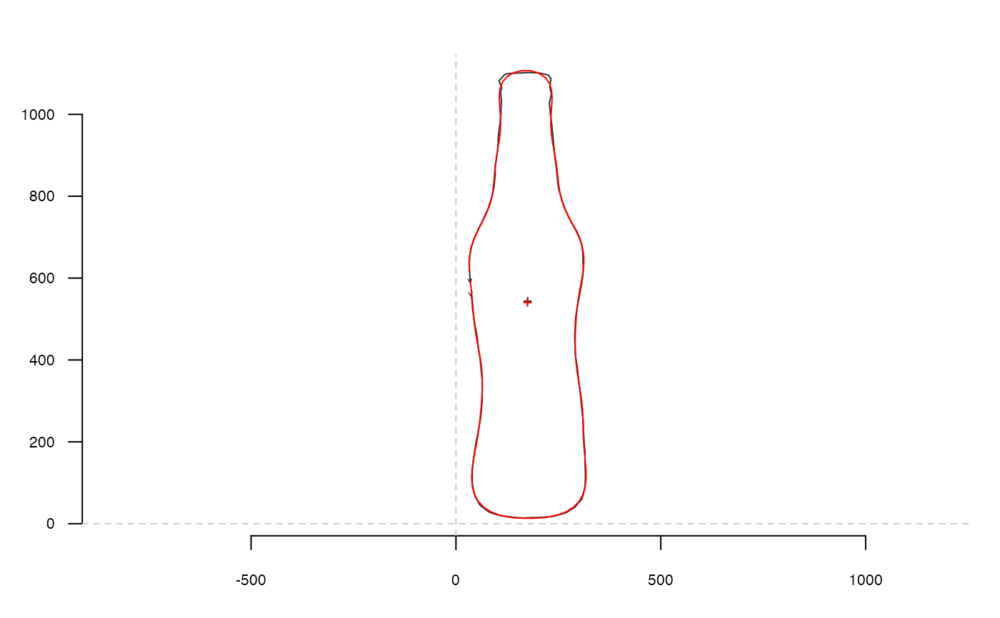

efourier_i uses the inverse elliptical Fourier transformation to
calculate a shape, when given a list with Fourier coefficients, typically
obtained computed with efourier.
efourier_i(ef, nb.h, nb.pts = 120)
| ef |
|
|---|---|
| nb.h |
|
| nb.pts |
|
A matrix of (x; y) coordinates.
See efourier for the mathematical background.
Directly borrowed for Claude (2008), and also called iefourier there.
Claude, J. (2008) Morphometrics with R, Use R! series, Springer 316 pp. Ferson S, Rohlf FJ, Koehn RK. 1985. Measuring shape variation of two-dimensional outlines. Systematic Biology 34: 59-68.
Other efourier: efourier_shape,
efourier
#> $an #> [1] -143.1142910 5.2925309 22.9922936 -11.3596452 -14.9412217 #> [6] -5.4200881 5.7177112 0.4509076 0.3107020 -3.1633079 #> [11] 0.2814646 3.4927761 #> #> $bn #> [1] -13.8501141 -21.8994092 11.4235084 13.5870435 -12.6401807 2.5050679 #> [7] 5.1968464 -0.5366171 -1.0431706 1.0823659 2.3427969 0.1022387 #> #> $cn #> [1] 64.44753053 -3.15375656 -17.96822626 5.76052596 7.17390949 #> [6] -2.98410094 -1.20013013 1.18299684 -0.36305436 -0.46782525 #> [11] 0.67134872 0.08954658 #> #> $dn #> [1] -484.90299209 -1.04774048 42.07408510 3.40654863 -9.19128141 #> [6] -2.99359284 0.96722479 2.22582484 0.02026172 -2.26134728 #> [11] -0.04679906 0.80569603 #> #> $ao #> [1] 349.02 #> #> $co #> [1] 1080.921 #>